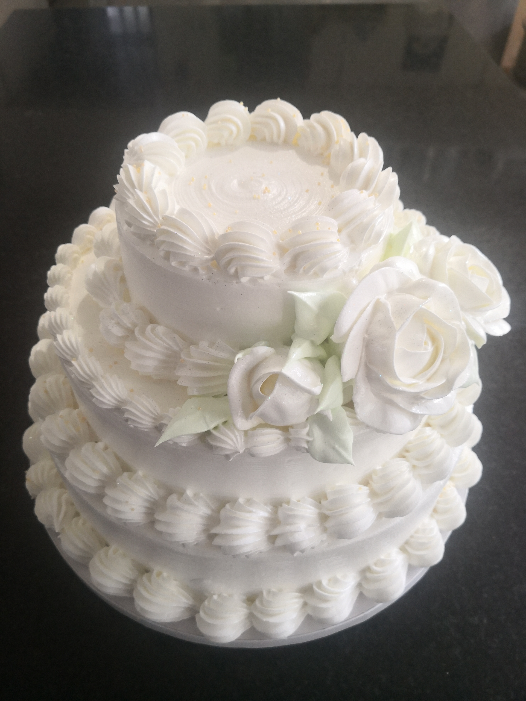
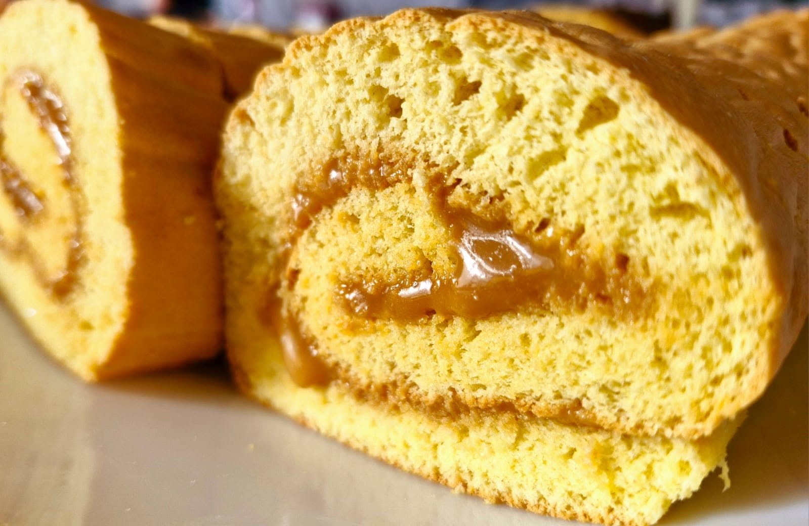

Queque Mini
Ideal para un antojo o detalle íntimo. Masa clásica sin preservantes en decoración tradicional con colores predeterminados.
2 porciones
Relleno: Leche condensada con cierto grado de cocción
₡4.000
Queques especiales diseñados a la medida y repostería clásica elaborada con recetas de casa para tus momentos más memorables.
Ideal para un antojo o detalle íntimo. Masa clásica sin preservantes en decoración tradicional con colores predeterminados.
Uno de los favoritos de la casa para reuniones familiares. Receta tradicional horneada sin preservantes en colores clásicos.
Equilibrio perfecto entre tamaño y sabor artesanal para celebraciones en casa, con nuestra receta base tradicional sin preservantes.
Disponibles en decoración tradicional o personalizada (personalizados y hoja de arroz requieren 48 h).
| Tamaño | Porciones | |
|---|---|---|
| Grande | 20 | |
| Queque 20 | 25 | |
| Queque 24 | 30 | |
| Queque 28 | 35 | |
| Queque 32 | 40 |

Disponibles en cualquier tamaño del catálogo, con diseño a medida, temática especial (como bodas o motivos como abejas) o hoja de arroz impresa.
Suave, húmedo y balanceado, preparado con el cariño de siempre para compartir en sobremesa o celebraciones especiales.
Textura cremosa y sabor casero a coco con caramelo dorado, pensado para quienes buscan un clásico distinto en la mesa.

Clásico arrollado de 50 cm de largo con nuestra receta tradicional, sin decorar, ideal para compartir en familia o acompañar reuniones.

Arrollado de 50 cm de largo acabado con suave merengue italiano, perfecto para dar un toque especial a celebraciones y mesas dulces.
Selecciona el tamaño de tu queque o postre artesanal según tus invitados.
Completa el formulario con la fecha de entrega, sabores y dedicatoria.
Coordina el adelanto por SINPE Móvil vía WhatsApp y retira fresco en local.
En Pastelería Las Esmeraldas elaboramos cada receta de manera 100% artesanal desde 1980, utilizando harina, huevos, leche y mantequilla sin mejorantes ni preservantes para llevar sabor y frescura a tu mesa.